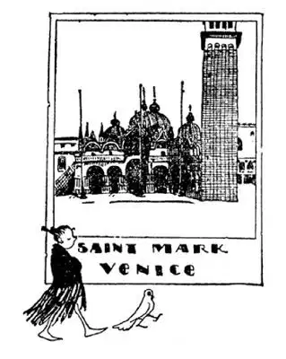
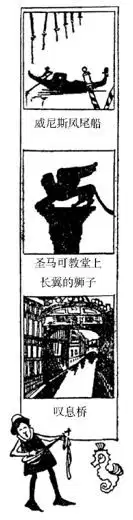
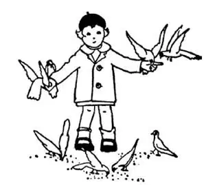

34
The Boot Top
靴子顶端

YOU’VE heard of the “old woman who lived in a shoe, who had so many children she didn’t know what to do.” Well, there is a boot in which live not only many children but millions of children and millions of men and women too. It is called Italy. It is the largest boot in the World and yet it is not large enough to hold all its children, so a great many of them have come over to America. The very first one of them to come over was Christopher Columbus, over four hundred years ago. He sailed from Spain, but he was born in Italy and lived in a city at the top of the boot, called Genoa. A part of his house is still standing in Genoa, and there is a statue of him just outside the railroad station. Ships still sail from Genoa to America, but they know where they are going now and Columbus didn’t.
On the other side of the boot top is another city. It is not near the water, nor by the water, nor on the water, but in the water. It is built on many little islands, and the streets are water with bridges across them. This city is called Venice. The water streets are called canals, and the main street, which would be a broad avenue if it were paved, is called the Grand Canal. Instead of automobiles or carriages, the people have to use boats. These boats are painted black and in the center there is a little cabin like a closed automobile. In the very front there is a queer thing with teeth which looks something like a big comb standing on end. These boats are called gondolas, and a man called a gondolier stands back of the little cabin and rows the gondola with one long oar. There are no “stop” and “go” signs at the canal crossings, so the gondoliers, as they come to a crossing, call out a funny “ooh,” and if there is a gondolier coming from the cross canal he calls back so that they will not run into each other. There are no honking horns, no rumbling wheels—Venice is almost silent except for singing and music.
Long ago where Venice now is there were many little islands but no city. Some people, called Veneti, were troubled by a wild tribe from the north. So they moved to these islands to get away from these annoying tribes. The Veneti cut posts made of cedar wood, which does not easily rot, and drove them down into the water, and on top of these posts they built their houses. The Veneti lived chiefly on fish, which they caught in large numbers, because all they had to do was to drop a line or net out of the front door. In fact, they caught so many fish they could not eat them all. So they gathered salt by drying seawater and salted the fish so that they would keep.
As the Veneti lived on the water they had to be good sailors, and they were. So they sailed to all corners of the Mediterranean Sea, selling their salt fish and selling salt too, and bringing back in payment silk gowns and rugs and jewels. Then people from all over Europe came to Venice to buy these things which the Veneti had brought back in exchange for this fish and salt, and Venice became the greatest shopping-place, the greatest market, in Europe. So the Venetians, as the Veneti came to be called, kept on getting richer and richer. They built beautiful palaces along the canals, and as they believed a certain saint had brought good luck to them and their city, they built a beautiful church to him. This saint was St. Mark. They found his bones and buried them in this church underneath the altar. St. Mark’s Church is different-looking from any of the churches I have told you about so far. It has five domes, one on each side and one big dome in the center, but these domes are not like those of St. Paul’s or the Capitol—they are shaped like an onion.

威尼斯圣马可
They built this church to St. Mark because they believed he brought them good luck
人们为圣马可建了这个教堂，因为他们认为是他给他们带来了好运
Pictures are usually painted with paint, and you have probably never seen colored pictures made without paint. But the inside of St. Mark’s, and the outside too, is covered with hundreds of pictures, not made with paint but out of bits of colored stone and gold and colored glass. Such pictures are called mosaics. They will not fade nor peel off, nor wash off, as painted pictures might do.
As you might have a dog for a pet, St. Mark was supposed to have had a lion for a companion, so on top of a column, out in front of his church, the Venetians put a bronze statue of a lion with wings. Over the door of the church there are four horses. They are not live horses, yet they have traveled far. They were made about the time of Christ, out of bronze, and they have been carried away by one ruler and another from one place to another, and finally back again to Venice.
The largest piece of land in Venice is a paved square in front of St. Mark’s. In this square there are flocks of pigeons, and they are so tame they will alight on your hand or shoulder to be fed. People have pictures taken of themselves with pigeons on their head and shoulders and at their feet. Once upon a time Venice was saved from an enemy by a message brought by a carrier-pigeon, and ever since then Venetians treat pigeons as sacred, and they would arrest and punish any one who harmed a pigeon. Did you know that a pigeon discovered America? Yes, that’s a fact, for in Italian “Columbus” means “pigeon.” So his real name is Christopher Pigeon.

Venice is now only a city, but it used to be like a little country all by itself. It made its own money and it had its own ruler, who was called a Doge (dozhe), which means Duke. A Doge ruled like a president and lived in a palace like a king, and punished people who had done wrong, like a judge. Just across the water street from the Doge’s palace was the prison, and connecting his palace with the prison was a covered bridge. When a man was sent to prison by the Doge he crossed over this bridge, sighing and groaning, so it came to be called the “Bridge of Sighs.”
Theaters are sometimes named “The Rialto,” but The Rialto is not a theater. It is a bridge in Venice over the Grand Canal. It has shops along its sides. Venice was the shopping-place of Europe, and the Rialto was the department store of Venice, where every kind of thing was sold. There is a play written by William Shakspere, the English author, called “The Merchant of Venice.” The story is about a man who had a shop on the Rialto.
The Venetians made their living in the first place out of two commonplace things right at hand—fish and salt. That was the start of their fortune. There was also a great deal of another commonplace thing right at hand too—this was sand. Sand seems to have very little value, but the Venetians found out that they could make glass out of sand by melting it in a furnace with something else. They found out too that they could blow this melted glass as one blows soap-bubbles, and by blowing the glass in this way into different shapes they made wonderfully beautiful bottles, vases, beads, and drinking- glasses. The glass-blowers became as famous as any artist who could make beautiful paintings or beautiful music, and the glass-blowers made fortunes besides, for people everywhere sought their work and paid high prices for it. They were the most important people in Venice. A specially fine glass-blower was as important as the Doge himself—one glass-blower was made a Doge—and some of their daughters even married princes.

Feeding The Pigeons （喂鸽子）
Venice is now no longer a country by itself. It is now only one city in Italy, but people go from all over the World to see St. Mark’s and the Doge’s palace, to bathe at its wonderful beach nearby called the Lido, to ride in gondolas on its canals, and listen to musicians who on warm moonlight nights sing and play on stringed instruments. Venice is one of the places in the World where every girl thinks she would like to spend her honeymoon when she is married.
An American girl once sent a postal card home: “Here I am in Venice. It is wonderfully beautiful—the golden palaces, the gorgeous sunsets, the enchanting music. I am sitting in a gondola on the Grand Canal and drinking it all in!” We speak of a person “thirsting” for knowledge or beauty, but one would have to be very thirsty to drink in the Grand Canal.
The “Boot” lies in the Mediterranean Sea, but the part of the sea that borders Venice is called The Adriatic. Venice is so beautiful it is known as the “Queen of the Adriatic.” Fame and fortune made from fish and salt and ships and sand!
【中文阅读】
你听说过这样一首童谣吧，“有位妇人住在鞋子里，孩子太多了，不知怎么办”。告诉你，还真有这样一只靴子，那里不仅住着很多孩子，而且住着无数大人和小孩。这只靴子叫意大利，是世界上最大的靴子，然而还是装不下它所有的孩子，所以他们当中很多人就来到了美洲。他们中最先过来的是克里斯托弗 · 哥伦布，那是四百多年前的事。他从西班牙起航，但他生于意大利，住在靴子顶部一个叫做热那亚的城市。他的部分故居还在热那亚，现在依然完好。在热那亚火车站外面还竖立着他的雕像。现在仍然有轮船从热那亚航行到美洲大陆，这些轮船都有确定的航线，而哥伦布当时却不知道自己航行的前方是何处。
在靴子顶部的另一侧还有一个城市。它不在水的附近，不在水边，不在水上，而是在水里。整个城市建在很多小岛上，它的街道就是水道，有很多小桥横跨在上面。这个城市叫做“威尼斯”。这些水道叫做运河，其中最大的水道叫做“大运河”，这条水道如果铺成路面，就会是条宽敞的林荫大道。人们出行 不是开汽车或坐马车，而是靠坐船。这些船被漆成黑色，中间有个小船舱，像封闭的小汽车。船头有个有着许多齿的奇怪东西，看起来就像个大梳子竖在那里。这种船叫做“凤尾船”，凤尾船船夫站在小船舱后面，用一支长长的船桨划动船。在运河交叉点没有“停”或“行”的交通标志，所以当船到达一个交叉点时，船夫就会“嗬”地喊一声，喊声挺滑稽的。如果此时有船夫从横贯的运河过来，他也会“嗬”地回应一声。这样他们的船就不会相撞了。那里没有嘀嘀的喇叭声，也没有隆隆的车轮声——威尼斯除了歌声和音乐之外几乎是宁静无声的。
很久以前，在现在威尼斯的地方有很多小岛，但没有城市。一个叫做威尼西亚的民族，受到北方一个野蛮部落的不断侵扰，于是来到这些小岛上，避开这些讨厌的部落。威尼西亚人把不易腐烂的雪松木削成木桩，把木桩敲进水底，然后在木桩上建起房屋。威尼西亚人的主食是鱼，他们能捕到大量的鱼，因为他们只要从房屋前门向水中丢下一根钓鱼线或者撒下一张渔网，就能逮住鱼。甚至，他们捕的鱼多得吃不完。他们就蒸发海水获得盐，用盐腌鱼，鱼就能保存下去了。
由于威尼西亚人住在水上，他们就必须擅长海上航行，实际上也确实如此。他们航行到地中海的每个角落，把咸鱼和盐卖掉，换回丝绸外袍、小毛毯和珠宝。然后欧洲各地的人都到威尼斯购买威尼西亚人用鱼和盐换来的这些好东西，威尼斯因此就发展为欧洲最大的商场和最大的市场。威尼西亚人也被称为威尼斯人了，他们变得越来越富有。他们在运河沿岸建造了一些美丽的宫殿。威尼斯人认为有个圣人给他们和他们的城市带来了好运气，于是就建了一个教堂纪念他。这位圣人叫圣马可。他们找到了他的遗骨，并把遗骨埋在这个教堂里的祭坛下。圣马可教堂的外观和我以前介绍过的任何一个教堂都不一样。它有五座圆顶，四边各有一座，中间是一座大圆顶，但是这些圆顶和圣保罗大教堂或国会大厦的圆顶不一样——它们的形状像洋葱头。
画通常是用颜料画的，你也许从未见过不是用颜料画的彩色画。但是在圣马可教堂里面和外面布满了许许多多画，都不是用颜料画的，而是用彩色石头、黄金和彩色玻璃一小片一小片镶嵌而成的。这种画叫做“马赛克”。不会像颜料画那样褪色或脱落，也不会被水洗掉。
就像你可能会养条小狗做宠物那样，据推断圣马可也养了个狮子做伴，于是在圣马可教堂前的圆柱上威尼斯人放了一头长翅膀的狮子青铜雕像。在教堂门的上方有四匹马。它们不是活马，但却走过了很远的路。这四匹马大约是在 耶稣在世时用青铜制作的，被一个又一个统治者从一个地方带到另一个地方，最终又回到了威尼斯。
威尼斯最大的一块空地是圣马可教堂前一个铺了砖石的广场。广场上有成群的鸽子，它们非常温顺，总是飞落到你的手上或肩上等你喂食。人们把鸽子在他们头上、肩上和脚边的情景拍摄下来。很久以前，一只信鸽送来了重要的情报，才使威尼斯免受敌人的袭击，保全下来，从此以后威尼斯人把鸽子奉为神圣之物，任何人伤害鸽子，都会被拘捕并受到惩罚。你知道“一只鸽子发现了美洲”这一说法吗？是的，那是真的，因为在意大利语中，“哥伦布”就是“鸽子”的意思。所以他真正的名字是克里斯托弗 · 鸽子。
威尼斯现在只是一个城市，但过去就像一个独立的小国家，自己造货币，也有自己的统治者，叫做总督，就是君主的意思。总督像总统一样统治国家，像国王一样住在宫殿里，像法官一样惩罚做坏事的人。总督府的水道对面就是监狱，连接总督府和监狱的是一座有篷的桥。被总督判刑送到监狱去的犯人跨过这座桥，总是一边叹息一边呻吟，因此这座桥后来就被叫做“叹息桥”。
城市的剧院区有时被叫做“里阿尔托”，但“里阿尔托”并不是剧院，而是威尼斯大运河上的一座桥，两边有商店。如果说威尼斯是欧洲的商场，那么里阿尔托则是威尼斯的百货商店，里面有各种各样的商品。英国作家莎士比亚写过一部戏剧叫做《威尼斯商人》，故事讲的就是一个在里阿尔托开店的人。
威尼斯人最初用身边两样很普通的东西谋生——鱼和盐，从此开始发迹。他们周围还有一样很普通的东西——那就是大量的沙子。沙子似乎很不值钱，但威尼斯人发现把沙子和另一种东西一起放到火炉里熔化就能制成玻璃。他们还发现可以像吹肥皂泡那样去吹熔化的玻璃。把玻璃吹成各种不同的形状，他们就制造出非常美丽的瓶子、花瓶、珠子和酒杯。吹玻璃工匠变得和那些能画出美丽的画或演奏出美妙音乐的艺术家们一样，成了名人，而且还发了财，因为各地的人都寻求他们的作品并出高价购买。他们是威尼斯最重要的人。一位出类拔萃的吹玻璃工匠和总督本人一样重要——有位吹玻璃工匠还当过总督——有些工匠的女儿甚至嫁给了王子。
威尼斯现在不再是一个独立的国家，只是意大利的一个城市，但世界各地的人都去参观圣马可大教堂和总督的宫殿，到附近一个风光美丽叫做“丽都”的海滩浴场去享受一下，乘坐凤尾船在运河上游玩，在月色溶溶、暖洋洋的夜晚聆听音乐家一边唱歌一边弹琴。威尼斯是世界上每个女孩希望将来能去度蜜月的地方之一。
一个美国女孩曾经给家里寄了一张明信片，上面写道：“我现在到了威尼斯。这里太美了——金色的宫殿、绚丽的落日、迷人的音乐。我正坐在大运河上的凤尾船上，陶醉于这里的一切！”我们常说一个人“渴望”获得知识或者美丽，但是说一个人非常想陶醉于大运河，也只能用“渴望”一词。
“靴子”位于地中海，但威尼斯周围那部分海叫做亚得里亚海。威尼斯非常美丽，被称为“亚得里亚海女王”。她的名声和财富来源于鱼、盐、船和沙子！